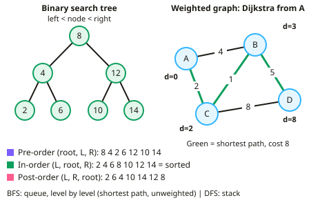

A-level Computer Science Year 13 · Topic 5
Advanced data structures and algorithms
Advanced data structures and algorithms takes the structures you know further, with a focus on efficiency and memory.
We will traverse graphs and trees, design hash tables and dictionaries, and compare arrays, records, lists and tuples.
Then we implement stacks, queues and linked lists, and evaluate expressions with reverse Polish notation, stacks and expression trees.
- 5 subtopics
- 122 questions
- Free: 5.1 notes and 10 questions
In this topic
- 5.1Graphs, trees and traversalFree below · 24 questions
- 5.2Hash tables and dictionariesOpen in Full Marks · 25 questions
- 5.3Arrays, records, lists and tuplesOpen in Full Marks · 26 questions
- 5.4Stacks, queues and linked listsOpen in Full Marks · 30 questions
- 5.5Reverse Polish notation and expression evaluation using stacks and treesOpen in Full Marks · 17 questions
5.1 · Free notes
Graphs, trees and traversal

Key points
- A graph has vertices (nodes) and edges; it may be directed or undirected, weighted or unweighted, and can be stored as an adjacency matrix or adjacency list.
- A tree is a connected graph with no cycles; a binary tree has at most two children per node, and a binary search tree keeps smaller values left and larger values right.
- Tree traversals: pre-order (root, left, right), in-order (left, root, right — giving sorted order in a BST) and post-order (left, right, root).
- Graph traversals: breadth-first search uses a queue and finds the shortest path in unweighted graphs; depth-first search uses a stack.
- Dijkstra's algorithm finds the shortest path from a start node to every other node in a weighted graph with non-negative weights.
In more detail
- Worked Dijkstra: S–A 7, S–B 2, B–A 3, A–T 1, B–T 8 → B = 2, A = min(7, 2 + 3) = 5, T = min(2 + 8, 5 + 1) = 6 → shortest path S → B → A → T, length 6.
- Worked BFS path: breadth-first search records each node's parent; following parents back from the target gives the route with the fewest edges.
- Worked DFS uses: detecting cycles, solving mazes and ordering tasks that depend on each other.
- Worked tree facts: a tree with n nodes always has n − 1 edges; a file system is a rooted tree.
Practice
Graphs, trees and traversal: 10 questions
Pick an answer to check it, or open the answer for the explanation.
1. What does Dijkstra's algorithm find?
- A minimum spanning tree
- The shortest path from a start node in a weighted graph
- All cycles in a graph
- A sorted list
Show answer
B: The shortest path from a start node in a weighted graph. It works with non-negative edge weights.
2. Which traversal of a binary search tree outputs values in sorted order?
- Pre-order
- In-order
- Post-order
- Breadth-first
Show answer
B: In-order. Left subtree, then root, then right subtree.
3. Which data structure does breadth-first search use?
- Stack
- Queue
- Tree
- Hash table
Show answer
B: Queue. A queue processes nodes level by level.
4. What is an adjacency matrix?
- A list of neighbours for each node
- A 2D array showing which vertices are connected
- A sorted list of edges
- A type of traversal
Show answer
B: A 2D array showing which vertices are connected. It is simple but can waste space for sparse graphs.
5. What defines a tree in graph theory?
- A graph with cycles
- A connected graph with no cycles
- A graph with exactly two nodes
- A directed graph only
Show answer
B: A connected graph with no cycles. Every tree with n nodes has n − 1 edges.
6. Which data structure does depth-first search typically use?
- Queue
- Stack
- Hash table
- Array only
Show answer
B: Stack. It explores as far as possible along each branch first.
7. How many edges does a tree with n nodes have?
- n
- n − 1
- n + 1
- 2n
Show answer
B: n − 1. A tree is connected with no cycles.
8. When is an adjacency list preferable to an adjacency matrix?
- For dense graphs
- For sparse graphs, as it uses less memory
- Always
- Never
Show answer
B: For sparse graphs, as it uses less memory. A matrix wastes space when few edges exist.
9. A simple graph has 6 vertices. How many cells does its adjacency matrix contain?
- 36
- 12
- 21
- 6
Show answer
A: 36. An adjacency matrix has one row and one column per vertex, so 6 × 6 = 36 cells, however many edges exist. 6 is the number of rows only.
10. Values 50, 30, 70, 20, 40 are inserted in that order into an empty BST. What is the post-order traversal?
- 20, 40, 30, 70, 50
- 50, 30, 20, 40, 70
- 20, 30, 40, 50, 70
- 50, 30, 70, 20, 40
Show answer
A: 20, 40, 30, 70, 50. Post-order visits left, right, then root: 20, 40, then 30, then 70, and finally 50. 50, 30, 20, 40, 70 is the pre-order and 20, 30, 40, 50, 70 is in-order.
Keep going in Full Marks
Full Marks has 24 questions on Graphs, trees and traversal (14 more than here), set out in practice levels. You also get notes and 3D models for all 5 subtopics of Advanced data structures and algorithms, plus games, timed exams and past papers.